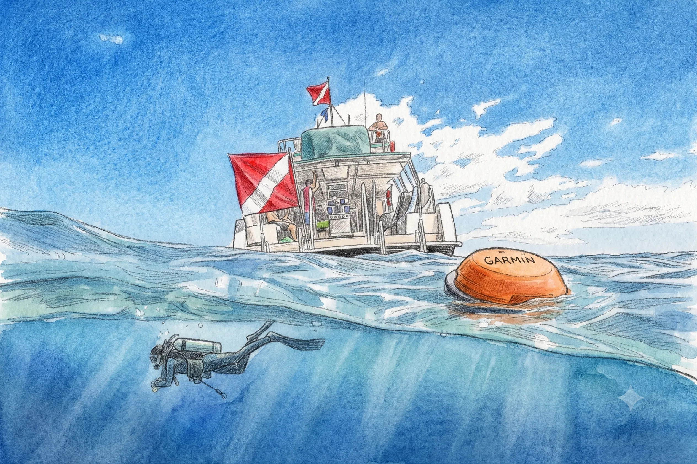
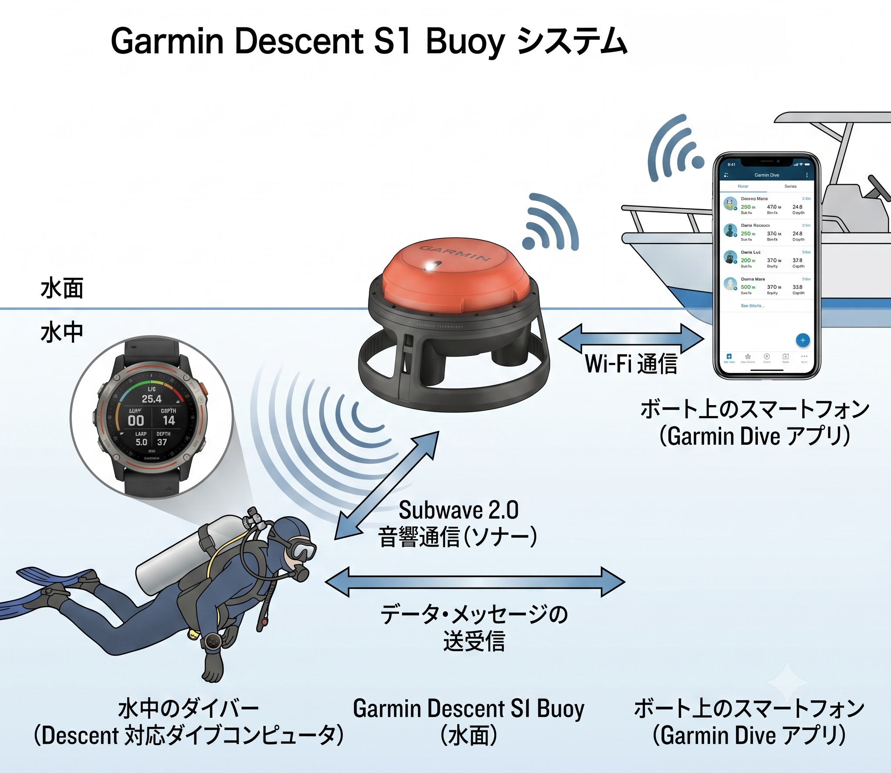

The road Orz passed by 2026 年 06 月
06 月 22 日 ( 月 )
Dive #170 漂流対策電子デバイス (3) Garmin Descent S1 Buoy まとめ
なぜダイビングの世界に登山のココヘリのようなサービスがないのだろうか？と思っていろいろ調べた結果を "日本国内で使用可能なダイバーロスト漂流対策製品・サービス" の一覧を gist にまとめました。
今回取り上げる Garmin Descent S1 Buoy は、漂流後に位置を通報する機器ではなく、そもそもダイバーを見失わないことを目的としたシステムです。
1 概要

- 製品名:
- Garmin Descent S1 Buoy
- 問い合わせ先:
- GARMIN
- 水中通信方式:
- Subwave 2.0 ソナーテクノロジー (Garmin 独自)
- 海上通信方式:
- Wi-Fi
- 受信方式:
- スマホアプリ
- 特徴
-
- ボート上のスマホと Wi-Fi 接続
- Wi-Fi のため無線使用免許不要、無線基地局免許不要、サブスクリプション不要
- ブイと船上のスマートフォン間の Wi-Fi 通信距離は約 60m
- 水面下での Subwave の到達距離は 100m
- 最大 8 人のダイバーに対応 (要 Subwave 2.0 対応 Garmin ダイブコンピュータ)
- 各ダイバーの位置情報をトラッキング
- 各ダイバーとの定形メッセージサポート
- 各ダイバーのタンク圧、水深距離などをモニタリング、警告発信
- 各ダイバーのブイまでのナビゲーションサポート
2 利用可能エリア
Wi-Fi と Subwave 2.0 による直接通信方式のため、特定のサービス提供エリアは存在しません。通信距離内であれば世界中どこでも利用できます。
3 機能
3.1 はじめに
詳細は公式サイトならびにオンラインマニュアルを参照してください。
3.2 Garmim Japan のビデオ
3.3 ダイバーの位置のトラッキング
レーダー図のような画面で、最大 8 人までのダイバーのブイからの位置をトラッキングすることができます。
Subwave の通信範囲であればダイバーの位置をトラッキングし続けることが可能です。
3.4 水上からダイバーをモニタリング
最大 8 名のダイバーのエア残量、水深などをモニタリングすることができます。自動アラート機能により、船上のスマホからダイバーに警告メッセージを送ることも可能です。またダイバーの水深異常など水上のクルーに通知されます。
3.5 ダイバーとの双方向通信
Garmin Dive アプリを使って Subwave ネットワークに接続された Descent ダイブコンピューターを装着したダイバーと定型メッセージをやり取りできます。
3.6 ブイを探す
Subwave ネットワークに接続された Descent ダイブコンピュータを装着したダイバーは S1 Buoy との距離と方角を確認でき、自分の状況を把握することが可能です。
4 アプリ
5 サポートデバイス
2026/06/23 時点で以下の Garmin デバイスが Subwave 2.0 をサポートしています。
- Descent Mk2i T1 Transmitter セット
- Descent Mk2i
- Descent X50i
- Descent T2 トランシーバー
- Descent Mk3Si SKF12 PVD Ti/French Gray
- Descent Mk3Si Carbon Gray DLC Ti/Black
- Descent Mk3i チタンバンドセット
- Descent Mk3i
- Descent Mk3i 51mm Black & Bare Titanium
6 大まかな仕組み

Garmin Subwave 2 対応デバイスと Descent S1 Buoy 間は Garmin 独自の音響通信テクノロジー Subwave 2.0 でデータやメッセージをやり取りします。
Descent S1 Buoy と船上のスマホ間のデータとメッセージのやり取りは Wi-Fi で行います。
Garmin デバイス、Descent S1 Buoy、スマホしか介在しませんのでシステムとしてはとてもシンプルです。
Garmin デバイスと Descent S1 Buoy は使用前にペアリングを行い、スマホは Descent S1 Buoy を Wi-Fi アクセスポイントとして設定します。
7 運用上の注意点と制約
7.1 通信距離
- 船上スマホとの Wi-Fi は約 60m
- ブイとダイバー間の Subwave 通信は約 100m
7.2 機器の準備
- Wi-Fi 接続設定が必要
- ペアリングが必要
7.3 機材の制約
- 対応 Garmin デバイスが必要
- 最大 8 人まで
7.4 コスト
- 本体価格が高価
- ダイブコンピュータの買い替えが必要になる場合がある
8 まとめ
Garmin Descent S1 Buoy は、漂流したダイバーを探すシステムではなく、そもそもダイバーを見失わないことに特化したシステムです。漂流事故の発生確率そのものを下げることを目的とした製品であり、SEAKER-L3 や Garmin inReach Mini 2 のような遭難後の捜索支援機器とは性格が大きく異なります。
- Category :
- #Records of Orz's Road
- #ダイビング
- #スクーバダイビング
- #テクニカルダイビング
- #Garmin Descent S1 Buoy
- #ダイバーロスト対策
- #漂流事故対策